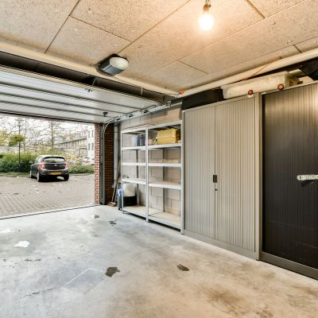

More usable room at home
Turn underused garage space into a room that supports everyday living more effectively.
Garage Conversions
Turn underused garage space into a warmer, more practical room in Bangor and nearby areas.
If your garage is mostly used for storage or no longer serves a real purpose, a garage conversion can be one of the most practical ways to gain extra living space without moving home. DM Design & Build LTD provides garage conversions in Bangor and nearby areas for homeowners who want more room, better day-to-day practicality and more value from the space they already have.

What this service solves
Garage conversions are ideal when you need more room but want to improve the property you already have instead of moving.
What we offer
Garage conversions are a strong option for homeowners in Bangor, Menai Bridge, Caernarfon, Bethesda and nearby areas who need more space but want to make better use of the home they already have. For many households, the garage is no longer used for parking at all, which makes it an obvious space to improve instead of leaving it underused.
A garage conversion can create a practical room for work, guests, children, hobbies or extra day-to-day living space. The aim is not simply to change the garage. It is to create a finished room that feels like a proper part of the home and improves how the property works in real life.

Testimonials
Replace these with your real reviews when ready.
Areas we cover
We provide garage conversions in Bangor and across nearby parts of Gwynedd and Anglesey. If you are searching for garage conversions in Bangor, garage conversion specialists near Menai Bridge, garage to room conversion work in Caernarfon or a garage conversion near you, DM Design & Build LTD is here to help.
Our service is designed for homeowners who want more usable space, better practicality and more value from the property they already own.
FAQ
Answers to common questions about garage conversions in Bangor and nearby areas.
Yes. We provide garage conversions in Bangor and nearby areas including Menai Bridge, Caernarfon, Bethesda, Beaumaris and surrounding locations.
A garage conversion can be used for a home office, playroom, guest room, extra sitting area or another practical room depending on what your household needs most.
A garage conversion can help you create more usable space within the property you already have, which makes it a practical option when you want more room without moving.
Yes. We work across Bangor and nearby areas including Menai Bridge, Caernarfon, Llanberis, Bethesda, Beaumaris and more.
You can contact us here or call 07835 827283 to discuss your garage conversion project.
Ready to create more space?
Speak to DM Design & Build LTD about a garage conversion in Bangor or a nearby area.
We help homeowners turn underused garage space into practical rooms for family life, work and everyday living.